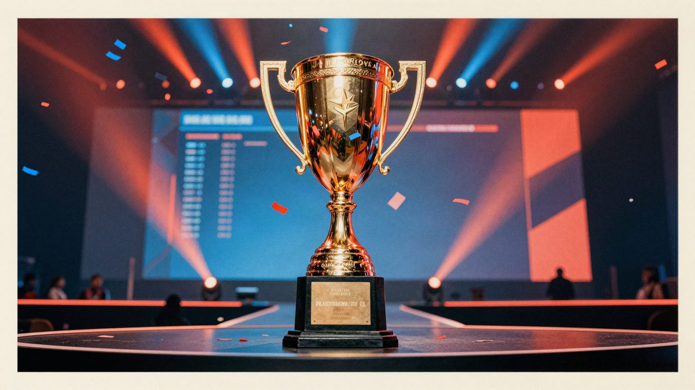

Knight iz BLG-a proglašen MVP-em finala LoL Worlds 2026., BLG je s 3:1 pobijedio Gen.G

Bilibili Gaming je s 3:1 pobijedio Gen.G u finalu svjetskog prvenstva League of Legends 2026. i osvojio prvi Summoner's Cup za kinesku ligu LPL nakon 2021. Midlaner Knight proglašen je MVP-om finala, kao prvi kineski midlaner s tom nagradom. Riot Games je tijekom finala najavio update New Dawn, a MSI 2027. održat će se u Španjolskoj.
Midlaner Bilibili Gaminga (BLG) Zhuo "Knight" Ding proglašen je MVP-em finala svjetskog prvenstva League of Legends (LoL Worlds) 2026. BLG je u finalu pobijedio Gen.G s 3:1 i osvojio prvi Summoner's Cup za kinesku ligu LPL nakon EDward Gaminga 2021. godine. Knight je prvi kineski midlaner koji je osvojio LoL Worlds i nagradu za MVP-a finala.
Svi su gledali dvoboj na mid lineu između Knighta i Jeong "Chovy" Ji-hoona iz Gen.G-a. Knight ga je jasno dobio.
Kako je izgledao finale
Finale nije došlo do petog meča, no Insider Gaming ubraja ga među najbolja finala svjetskog prvenstva ikad. U prvom meču Chovy je s nekoliko stunova na Syndri odveo Gen.G do pobjede, iako je Gen.G propustio svaki Elemental Drake i prvi Elder Drake. Knight je u tom meču igrao odlično i stekao više od 100 CS prednosti, ostvarivši "Flame Horizon" protiv igrača poznatog po vodstvima u CS-u.
Nakon toga Knight je preuzeo seriju, a Chovy je izgubio utjecaj na igru.
Utjecaj na mapi
Knight nije imao posebno spektakularan KDA, ali je njegov utjecaj na mapi bio presudan za pobjedu BLG-a. Cassiopeia je stvarala velik pritisak, Viktor je rasturao Gen.G u team fightovima, a Gen.G nije našao odgovor na Knightove playmakeove na Twisted Fateu u odlučujućem meču.
Nakon proglašenja MVP-a Knight je rekao: "Možda su nas prije meča mnogi podcjenjivali. Mislili su da ja ne mogu pobijediti Chovyja i da BLG ne može pobijediti Gen.G. Ali uspjeli smo. Napokon mogu reći svijetu da smo najjača ekipa, da smo najbolji."
Riot Games je tijekom finala najavio i veliki update za League of Legends pod imenom New Dawn. Potvrđeno je i da će se MSI 2027. održati u Španjolskoj, a LoL Worlds 2027. u Japanu.
Izvor: Insider Gaming